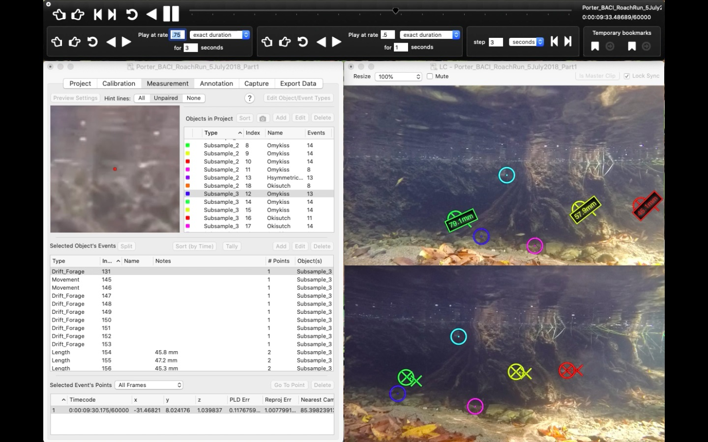
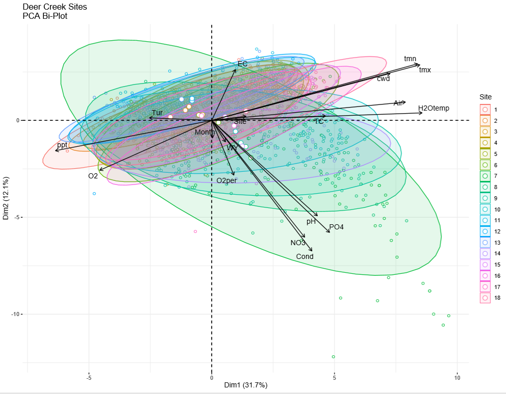

Food Web Ecology

As an undergraduate at UC Berkeley, I worked in Dr. Mary Power's River Food Web Ecology lab. I primarily I worked as a research assistant for PhD candidate Gabriel Rossi in researching the phenology of oversummer food webs in Northern California's streams, and the implicatons of the dynamics of food webs and environmental factors on the survival and fitness of juvenile salmonids. This work ranged from holistic river food web ecology, sampling algae, benthic macroinvertebrates, and snorkeling, to in-depth 3-D videogammetric techniques that we used to study juvenile salmonids movement and feeding behavior.
As an undergraduate at UC Berkeley, I worked in Dr. Mary Power's River Food Web Ecology lab. I primarily I worked as a research assistant for PhD candidate Gabriel Rossi in researching the phenology of oversummer food webs in Northern California's streams, and the implicatons of the dynamics of food webs and environmental factors on the survival and fitness of juvenile salmonids. This work ranged from holistic river food web ecology, sampling algae, benthic macroinvertebrates, and snorkeling, to in-depth 3-D videogammetric techniques that we used to study juvenile salmonids movement and feeding behavior.
As an undergraduate at UC Berkeley, I worked in Dr. Mary Power's River Food Web Ecology lab. I primarily I worked as a research assistant for PhD candidate Gabriel Rossi in researching the phenology of oversummer food webs in Northern California's streams, and the implicatons of the dynamics of food webs and environmental factors on the survival and fitness of juvenile salmonids. This work ranged from holistic river food web ecology, sampling algae, benthic macroinvertebrates, and snorkeling, to in-depth 3-D videogammetric techniques that we used to study juvenile salmonids movement and feeding behavior.
Water Quality Data Science

As an AmeriCorps serving at Sierra Streams Institute, I worked on an array of water quality data analysis projects. Most recently, I have been developing a structural equation model (SEM) for 20 years of water quality data that our robust team of staff and citizen science monitors have been collecting. This rigorous and expansive dataset has yet to be analyzed in depth, and it continues to be an extremely exciting project using an array of methods, primarily Principal COponent Analysis (PCA), to explore relationships and trends in this large mutivariate dataset.
I also contributed to the dataset by participating frequently in the monitoring, and doing much of the callibration and chemical analysis on the samples retrieved. Our monitoring program collects Nirate, Phosphate, Dissolved Oxygen, Conductivity, Turbidity, pH, E. Coli and Total Coliform, and other basic metrics at each site we sample, every month.
 As an undergraduate at UC Berkeley, I worked in Dr. Mary Power's River Food Web Ecology lab. I primarily I worked as a research assistant for PhD candidate Gabriel Rossi in researching the phenology of oversummer food webs in Northern California's streams, and the implicatons of the dynamics of food webs and environmental factors on the survival and fitness of juvenile salmonids. This work ranged from holistic river food web ecology, sampling algae, benthic macroinvertebrates, and snorkeling, to in-depth 3-D videogammetric techniques that we used to study juvenile salmonids movement and feeding behavior.
As an undergraduate at UC Berkeley, I worked in Dr. Mary Power's River Food Web Ecology lab. I primarily I worked as a research assistant for PhD candidate Gabriel Rossi in researching the phenology of oversummer food webs in Northern California's streams, and the implicatons of the dynamics of food webs and environmental factors on the survival and fitness of juvenile salmonids. This work ranged from holistic river food web ecology, sampling algae, benthic macroinvertebrates, and snorkeling, to in-depth 3-D videogammetric techniques that we used to study juvenile salmonids movement and feeding behavior.